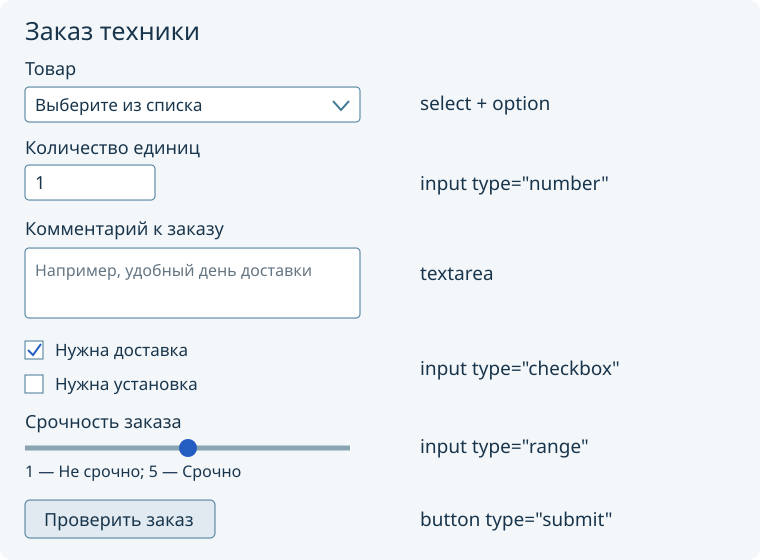
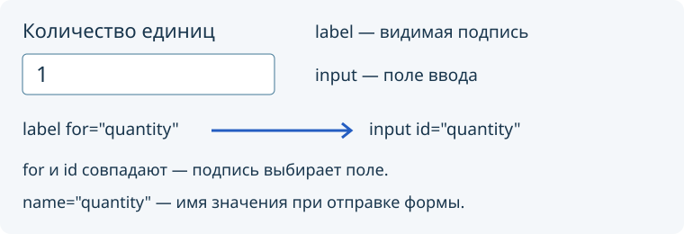

HTML-форма: поля, подписи, кнопки и встроенная проверка ввода
Что получится
Продолжаем прежний проект: добавляем к главной и каталогу страницу формы. Пройдите этапы самостоятельно: прочитайте пояснение, измените указанный файл, сохраните его и выполните самопроверку. После успешной проверки переходите дальше. Преподавателю показывают готовую работу один раз в конце; приглашать его после каждого этапа не требуется.
Текущий набор индивидуальных заданий — используйте свой номер, названия полей, три позиции каталога и начальные значения. Пример ниже — учебный вариант 00 «Техника дома», отдельный от студенческих вариантов. Заменяйте его данные своими; вариант 00 студентам не назначается.
Обязательный минимум для всех: три связанные страницы с общим CSS, форма со всеми шестью элементами своего варианта, подписи, начальные значения, ограничения ввода и проверенная отправка GET. Шесть элементов — список, число, многострочный текст, два независимых флажка и шкала; кнопка отправки добавляется отдельно. Помощь постепенно уменьшается: сначала дан каркас и небольшие образцы, затем нужно применить уже освоенный приём. Смысловые блоки добавляются по одному; собирать весь код без проверки не нужно.
Сегодня форма помогает ввести данные и обнаружить пропуски. Приложение пока не сохраняет заявку и не обрабатывает её программой. Используйте только вымышленные учебные данные. JavaScript и сервер не нужны ни для минимума, ни для продолжения.

Схема показывает состав формы, а не точное оформление: вид полей зависит от браузера. Справа подписаны HTML-элементы, которые будем добавлять по одному.
Этап 1. Подготовьте третью страницу
Сначала завершите обязательный минимум предыдущей работы: index.html, catalog.html, общий style.css, переходы и каталог с тремя позициями своего листа. Если что-то не работает, исправьте по самопроверке статьи 13. Её задания после обязательного минимума для этой пары не требуются. Форма использует три названия из вашего каталога, сложный макет не нужен.
Создайте рядом с ними копию catalog.html под именем form.html. В редакторе откройте новый файл; сам каталог сохраните. Используйте знакомые части страницы:
Место в form.html |
Изменение |
|---|---|
head, элемент title |
Название вкладки формы своего приложения; в примере «Форма — Техника дома · V00» |
head |
Сохранить кодировку, viewport и подключение общего style.css |
header и footer |
Сохранить название приложения и подпись своего варианта |
main |
Убрать только скопированное содержание каталога; добавить один h1 с названием формы из листа и поясняющий абзац «Учебная форма. Данные пока не сохраняются.» |
Внутри main, после поясняющего абзаца, добавьте оболочку формы:
<form method="get">
</form>
Поля следующих этапов будут находиться между этими тегами. После </form>, до </main> добавьте ссылку возврата:
<p><a href="index.html">Назад</a></p>
В существующий nav всех трёх страниц добавьте третью ссылку на form.html; её надпись в меню — «Форма». Соберите её по знакомому образцу ссылок главной и каталога. На главной после ссылки к каталогу добавьте отдельную ссылку к форме с надписью из строки «Название перехода к форме» своего листа.
Если выполняли продолжение пары 13, проверьте aria-current: в меню формы текущим должен быть только пункт «Форма», а не скопированный «Каталог».
Правила nav и nav a из предыдущего занятия уже находятся в общем style.css и применяются к новой странице. Третья ссылка встанет в тот же горизонтальный ряд «Главная — Каталог — Форма», а при нехватке места перенесётся. Проверьте одинаковое оформление меню на всех трёх страницах и переходы с клавиатуры через Tab и Enter.
Ожидаемый результат и самопроверка: откройте все три страницы через меню, затем вернитесь из формы по «Назад» на главную. Убедитесь, что заголовок и подписи принадлежат вашему варианту, CSS действует и меню горизонтальное.
Если не получилось: ошибка открытия страницы обычно означает несовпадение имени файла и href или файл в другой папке. Если форма выглядит без оформления, сравните строку подключения style.css с рабочей страницей. Не создавайте второй CSS для формы.
Как связаны подпись и поле

label — видимая подпись. for у подписи совпадает с id поля: при нажатии на подпись браузер выбирает связанное поле. Каждый id на странице должен быть уникальным.
name — имя данных при отправке формы. Это другая роль: одного id для передачи значения недостаточно. В примерах имена служебные, их можно сохранить в любом варианте.
placeholder — временная подсказка внутри поля. Она исчезает при вводе и не заменяет подпись.
Этап 2. Выберите позицию каталога
В form.html, между <form method="get"> и </form>, добавьте:
<p>
<label for="item">Товар</label>
<select id="item" name="item" required>
<option value="">Выберите из списка</option>
<option value="fridge">Холодильник</option>
<option value="washer">Стиральная машина</option>
<option value="kettle">Электрочайник</option>
</select>
</p>
select — список выбора, option — его пункт. Подпись «Товар» замените подписью выбора позиции из своего листа. Видимые названия замените тремя названиями из каталога своего варианта. Значения value сделайте разными; можно использовать item1, item2, item3.
Первая строка имеет пустое value="": это приглашение сделать выбор. required требует непустого выбора. Без пустого первого пункта браузер сразу выбрал бы первую позицию, и студент мог бы не заметить необходимость выбора.
Ожидаемый результат и самопроверка: сохраните и обновите form.html: список открывается, видны приглашение и три ваши позиции. Нажмите на подпись — фокус переходит к списку. Сверьте три названия с catalog.html.
Если не получилось: если открывается не то поле, сравните for подписи и id списка. Если сразу выбран товар, верните первый пункт с пустым value. Проверку required выполним после добавления кнопки.
Этап 3. Введите целое количество
Внутри той же формы после блока со списком добавьте:
<p>
<label for="quantity">Количество единиц</label>
<input id="quantity" name="quantity" type="number"
min="1" step="1" value="1" required>
</p>
Вместо «Количество единиц» возьмите подпись числового поля из своего листа (строка «Целое количество от 1»). Начальное число своего варианта укажите только в value; min="1" и step="1" оставьте. Порядок строк формы в разных вариантах может отличаться: после знакомства с элементами расположите блоки по порядку своего листа.
| Атрибут | Для чего нужен |
|---|---|
type="number" |
Числовое поле |
min="1" |
Минимум — единица |
step="1" |
Допустимы целые значения с шагом один |
value="1" |
Начальное значение |
required |
Поле нельзя оставить пустым |
input не имеет закрывающего тега. Числовое поле само не считает стоимость и не проверяет наличие товара на складе: это будущая программная логика.
Ожидаемый результат и самопроверка: сохраните form.html, откройте его по меню без параметров и сравните начальное число со своим листом. Нажмите на подпись — поле получает фокус; стрелки поля меняют число с шагом один.
Если не получилось: placeholder не задаёт начальное число — для него нужен value. Если подпись выбирает список, при копировании остались старые for или id. Числовому полю нужны собственные id="quantity" и name="quantity".
Этап 4. Добавьте несколько строк текста
После числового поля, внутри формы, добавьте:
<p>
<label for="notes">Комментарий к заказу</label>
<textarea id="notes" name="notes" rows="4"
placeholder="Например, удобный день доставки"></textarea>
</p>
Замените подпись и подсказку данными своего варианта. rows="4" задаёт исходную высоту в строках. У textarea есть закрывающий тег; текст между тегами был бы начальным содержимым.
Это необязательное поле: required здесь не добавляем.
Ожидаемый результат и самопроверка: сохраните form.html, напишите две строки вымышленного текста и убедитесь, что перенос работает. Очистите текст: снова появилась подсказка, а видимая подпись осталась.
Если не получилось: однострочный input не заменяет textarea. Если следующие поля стали текстом внутри большого поля, проверьте </textarea>. Начальный текст задаётся между тегами, а не атрибутом value.
Этап 5. Добавьте два независимых флажка
В form.html следом, внутри формы, добавьте первый флажок по образцу:
<p>
<input id="extra1" name="extra1" type="checkbox" value="yes" checked>
<label for="extra1">Нужна доставка</label>
</p>
Создайте второй такой блок сами: используйте id="extra2", name="extra2" и совпадающий for у его подписи. Замените обе подписи возможностями своего варианта. Атрибут checked ставьте только у тех, которые по листу выбраны в начале. Для отключённого флажка уберите атрибут полностью: checked="false" всё равно означает его присутствие и начальный выбор.
У этих флажков разные id и name. Можно включить оба, один или ни одного.
Ожидаемый результат и самопроверка: нажмите на текст каждой подписи — переключается только соответствующий флажок. Включите оба, затем снимите оба: выборы независимы. Откройте страницу по меню заново и сверьте исходные состояния со своим листом.
Если не получилось: если обе подписи переключают первый флажок, исправьте повторённый id и соответствующий for. Если выключенный по заданию флажок изначально включён, удалите его checked целиком.
Этап 6. Добавьте шкалу
Теперь примените связь подписи и поля самостоятельно. В form.html внутри формы после флажков добавьте абзац с label и input. Для поля используйте фрагмент:
<input id="level" name="level" type="range"
min="1" max="5" step="1" value="3">
Свяжите подпись со шкалой через for. В примере 00 подпись — «Срочность заказа», края — «1 — Не срочно; 5 — Срочно». Рядом с полем поместите текст краёв в span. Подпись, начальное value и названия краёв возьмите из своего листа. Диапазон остаётся от 1 до 5.
range показывает ползунок. Точное текущее число рядом автоматически не появляется: для такого индикатора позднее понадобится программный обработчик. Сейчас достаточно подписи, границ и работающего ползунка.
Ожидаемый результат и самопроверка: ползунок движется, текст обоих краёв виден. Переведите фокус к шкале через Tab, нажмите стрелки. В исходнике сверьте min, max, step и начальное value со своим листом; само значение дополнительно увидим в GET.
Если не получилось: обычное текстовое поле вместо шкалы означает пропущенный или неверный type. Если клик по подписи не переводит фокус, сравните её for с id="level".
Этап 7. Добавьте кнопку и соберите порядок своего варианта
После всех полей, перед </form>, добавьте:
<button type="submit">Проверить заказ</button>
Работайте в form.html. Надпись возьмите из строки «Текст кнопки отправки» своего варианта. submit запускает штатную отправку формы, а перед ней браузер проверяет ограничения полей. Ссылка «Назад» остаётся за пределами формы и просто открывает главную.
Теперь расположите все шесть смысловых блоков в порядке своего листа. Переносите целый абзац с подписью и полем, а не отдельные строки. Не переименовывайте id и for при перемещении. Кнопка остаётся после полей внутри формы. Порядок объяснения в статье — порядок примера 00, он не заменяет индивидуальный порядок задания.
В примере у form задан method="get", адрес action не указан. После успешной проверки браузер открывает текущую страницу с параметрами из полей в адресе. Например, выбранная позиция передаётся под именем item. В локальном учебном проекте серверного обработчика нет: страница может перезагрузиться, значения вернуться к начальным. Это не подтверждение сохранения заявки.
Не добавляйте чужой серверный адрес. Не вводите настоящие телефоны, пароли или другие личные сведения: GET помещает данные в адресную строку.
Ожидаемый результат и самопроверка: пересчитайте элементы и сверьте сверху вниз со своим листом: список, число, текст, два отдельных флажка и шкала присутствуют, даже если расположены иначе, чем в примере. Нажмите кнопку при пустом выборе позиции — браузер требует выбор.
Если не получилось: кнопка не запускает проверку — проверьте её type и положение перед </form>. Если браузер уходит на чужой сайт, уберите посторонний action. Не добавляйте novalidate: он отключит нужную проверку.
Этап 8. Самостоятельно испытайте ограничения и GET
Проводите проверки по одной. Перед каждой новой проверкой заполните остальные обязательные поля корректно.
| Действие | Ожидаемый результат |
|---|---|
| Оставить «Выберите из списка», нажать кнопку | Браузер просит выбрать позицию |
| Выбрать позицию, очистить количество, нажать кнопку | Браузер требует количество |
Ввести 0 и нажать кнопку |
Значение меньше минимума не принимается |
Ввести 1.5 и нажать кнопку |
Дробное значение не соответствует шагу; некоторые браузеры ограничивают его ввод |
Выбрать позицию, ввести 3, оставить комментарий пустым |
Встроенная проверка допускает отправку, поскольку комментарий необязателен |
Текст и вид сообщений зависят от браузера. Проверяется поведение, а не совпадение фразы с образцом. Если дробь с точкой не вводится в вашей локали, попробуйте разделитель, который принимает поле; приём дроби и возможность успешной отправки — разные проверки.
После успешной отправки посмотрите адрес: за знаком ? находятся пары имя=значение, разделённые &. Имена берутся из name, значения — из выбранных или заполненных полей. Например, часть адреса примера 00 может выглядеть так: ?item=kettle&quantity=3¬es=&extra1=yes&level=3. Порядок параметров может отличаться после перестановки блоков; русские буквы и пробелы могут быть закодированы. Параметр extra2 здесь отсутствует, потому что второй флажок снят.
Проведите ещё два опыта в браузере с form.html: отправьте корректную форму с обоими снятыми флажками, затем с обоими выбранными. Сравните адреса: во втором появляются оба имени extra1 и extra2. Передвиньте шкалу до правого края и отправьте снова: у level ожидается 5. После каждого опыта открывайте form.html по меню заново, а не судите об исходных значениях по странице после отправки.
Ожидаемый результат: все ограничения из таблицы работают, необязательный комментарий можно не заполнять, параметры GET соответствуют сделанному выбору. Это завершает обязательный минимум.
Если проверка не совпала с ожиданием
Исправляйте по одному признаку: найдите нужный элемент в form.html, измените его, сохраните, обновите страницу и повторите только неудавшийся опыт. Если неясно, что меняли, сравните небольшой блок с образцом соответствующего этапа.
| Признак | Где искать причину |
|---|---|
| Пустой выбор проходит проверку | required у select; пустое value="" первого option; кнопка внутри нужного form |
| Пустое число, ноль или дробь отправляются | type="number", required, min="1", step="1"; отсутствие novalidate у формы |
| Браузер требует заполнить комментарий | Лишний required у textarea |
| Поле видно, но в GET нет его значения | name у поля и положение внутри form; снятый checkbox ожидаемо отсутствует |
| В адресе смешались два значения одного имени | Случайно повторённый name; в этих шести полях каждому нужно своё имя |
| Клик по подписи выбирает другое поле | Повторённый id или несовпадение for и id |
| Начальные состояния не совпадают с листом | value, checked, первая пустая option; открыть страницу по меню без параметров |
| После отправки ввод исчез | Для текущей статической страницы это ожидаемо: GET показывает данные в адресе, приложение их не сохраняет |
Финальная самопроверка и показ преподавателю
- В папке есть три страницы,
style.cssи изображения; одинаково оформленное горизонтальное меню открывает каждую страницу. В узком окне ссылки переносятся без перекрытия и доступны с клавиатуры. - Форма соответствует своему варианту: три позиции, количество, многострочный текст, два флажка и шкала.
- Все поля имеют видимые связанные подписи;
idне повторяются, у полей естьname. - Самостоятельно проверены пустой выбор, пустое количество, ноль, дробь и корректное заполнение; рассмотрены GET, состояния флажков и значение шкалы.
- Самостоятельно измените одну подпись в исходнике, сохраните и проверьте результат, затем восстановите данные листа. Убедитесь, что понимаете, какое поле изменилось.
Сохраните всю папку проекта. К финальному показу подготовьте открытый form.html и исходник. За короткий показ:
- Назовите свой вариант, пройдите главная → каталог → форма. Покажите порядок шести элементов и исходные значения своего листа.
- Покажите один отказ отправки по выбору преподавателя — пустой выбор или нулевое количество — и успешную отправку. Укажите в адресе имя выбранной позиции и количество; заявка не сохраняется. Остальные испытания уже должны быть выполнены вами.
- По выбору преподавателя измените одну подпись или начальное значение, сохраните и откройте страницу заново без параметров. Объясните только соответствующий фрагмент: связь
for/idдля подписи либоvalueдля начального числа. Если выполняли продолжение, покажите законченный результат.
Показ проводится после завершения выбранного маршрута. Продолжение начинайте самостоятельно, без промежуточного разрешения преподавателя.
Продолжение после обязательного минимума
Выполняйте задачи последовательно в том же проекте, без JavaScript и сервера. Здесь нет полного решения: используйте освоенные приёмы и небольшие подсказки. Не меняйте данные и взаимный порядок исходных шести элементов своего варианта.
1. Объедините связанные поля в группы
Файл и место: form.html, внутри существующего form. Найдите соседние поля, которым подходит общее смысловое название, например две дополнительные возможности. Оберните их блоки в fieldset, первым дочерним элементом поставьте legend с названием группы. Создайте хотя бы одну осмысленную группу, не переставляя поля ради группировки.
Подсказка по оболочке, внутрь которой помещаются уже работающие блоки:
<fieldset>
<legend>Дополнительные возможности</legend>
<!-- Здесь расположите существующие соседние поля группы -->
</fieldset>
Критерии и самопроверка: название группы видно; внутри находятся связанные поля; подписи продолжают переключать именно свои флажки; GET и ограничения работают как прежде. Если появилась лишняя форма, удалите её: fieldset находится внутри единственного form, вложенный form не нужен.
2. Добавьте полезное дополнительное поле
Файл и место: form.html, после шести обязательных элементов, перед кнопкой. Придумайте полезное для своего приложения необязательное поле электронной почты для учебной обратной связи. Добавьте видимый label, поле с type="email", новые уникальные id и name, короткое объяснение назначения. Используйте только вымышленный адрес, например student@example.com.
Подсказка: устройство подписи и input уже показано для числа; меняются тип, идентификатор и назначение. Для email не нужны числовые min и step. required не добавляйте: это дополнительное поле.
Критерии и самопроверка: пустое поле не мешает отправке, строка abc вызывает встроенную проверку, student@example.com проходит её и появляется в GET под новым именем. Перед каждым опытом корректно заполните остальные обязательные поля. Объясните, почему встроенная проверка формата ещё не доказывает существование почтового ящика. Если значение отсутствует в адресе, проверьте name и положение поля внутри формы.
3. Сделайте форму удобнее с клавиатуры
Файлы и место: form.html рядом с полями; общий style.css после существующих правил. Пройдите всю форму без мыши: Tab/Shift+Tab перемещают фокус, пробел переключает флажок, стрелки меняют список и шкалу. Найдите одну реальную трудность: неясную границу шкалы, непонятную подпись или плохо видимый фокус — и исправьте её. При добавлении CSS ограничьте правило элементами формы, сохранив горизонтальную навигацию всех страниц.
Подсказка: к нужным полям можно применить знакомое по меню состояние :focus-visible; короткое пояснение размещается рядом с полем и при необходимости связывается с ним через aria-describedby="идентификатор-пояснения".
Критерии и самопроверка: каждый элемент достижим с клавиатуры, фокус виден, шкала имеет понятные края, подписи не исчезают при вводе. Поясните, какую трудность исправили, и повторите успешную отправку GET. Если порядок фокуса неожиданен, сначала проверьте порядок блоков в HTML; не назначайте положительные tabindex для искусственной перестановки.